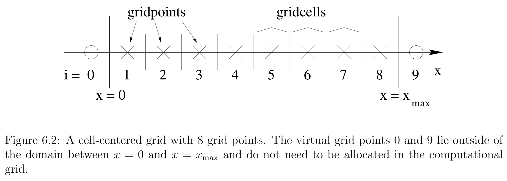
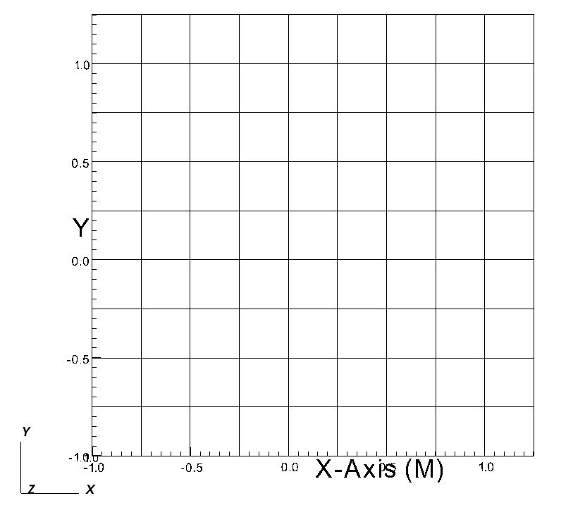
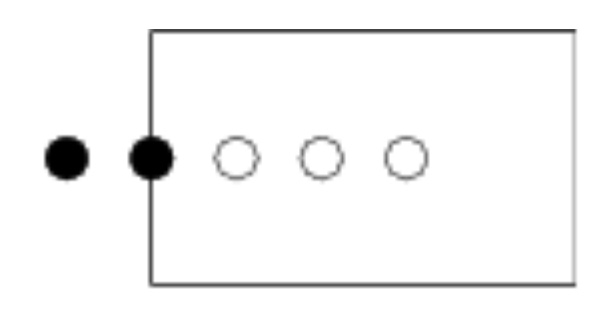
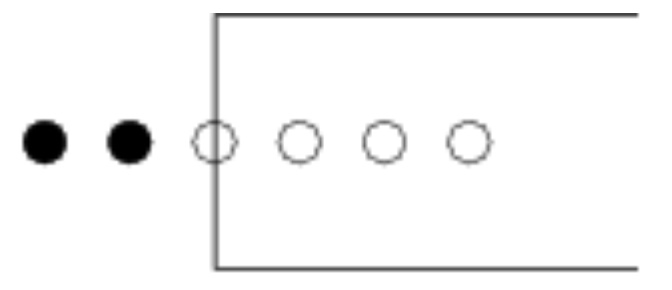
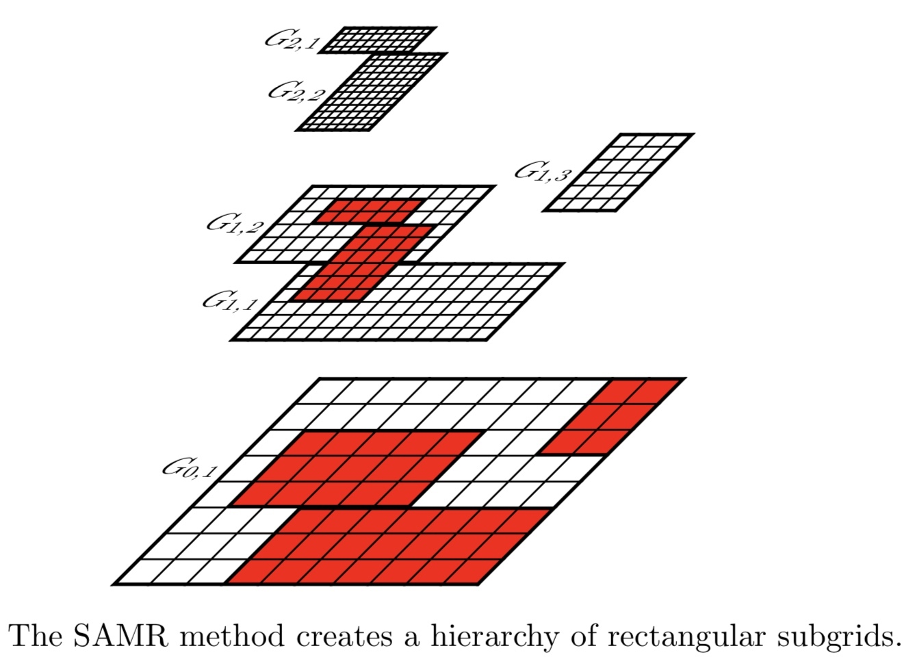

Here we solve the Poisson equation
where the right hand side \rho is given by
Parameter File
https://www.einsteintoolkit.org/gallery/poisson/poisson.par
Flesh parameters
1 2 3 4 5 6 7 8 9 10 11 12 13 14 15 16 | # Description of this simulation Cactus::cctk_run_title = "Solving Poisson's equation with CT_MultiLevel (multigrid setup, FMG)" # Give detailed information for each warning statement Cactus::cctk_full_warnings = yes Cactus::highlight_warning_messages = no # Give timing information Cactus::cctk_timer_output = "off" # Condition on which to terminate evolution loop Cactus::terminate = "any" Cactus::cctk_initial_time = 0 Cactus::cctk_final_time = 0 # Final iteration number ? Cactus::cctk_itlast = 0 |
Grid Structure
To do so, we first have to construct a numerical grid that covers an interval between x_{min} and x_{max}. We then divide the interval \left[x_{\min }, x_{\max }\right] into N gridcells, leading to a gridspacing of
We can choose our grid points to be located either at the center of these cells, which would be referred to as a cell-centered grid, or on the vertices, which would be referred to as a vertex-centered grid. For a cell-centered grid we have N grid points located at

whereas for a vertex centered grid we have N + 1 gridpoints located a
For now, the difference between cell-centered and vertex-centered grids only affects the implementation of boundary conditions, but not the finite difference representation of the differential equation itself.
1 2 3 4 5 6 7 8 9 10 11 12 13 14 15 16 17 18 19 20 21 22 23 24 25 26 27 28 29 | ActiveThorns = "Boundary CartGrid3D CoordBase Slab SymBase" CoordBase::domainsize = "minmax" CoordBase::xmin = -1.00 CoordBase::ymin = -1.00 CoordBase::zmin = -1.00 CoordBase::xmax = +1.00 CoordBase::ymax = +1.00 CoordBase::zmax = +1.00 CoordBase::dx = 0.25 CoordBase::dy = 0.25 CoordBase::dz = 0.25 CoordBase::boundary_size_x_lower = 3 CoordBase::boundary_size_y_lower = 3 CoordBase::boundary_size_z_lower = 3 CoordBase::boundary_size_x_upper = 3 CoordBase::boundary_size_y_upper = 3 CoordBase::boundary_size_z_upper = 3 CoordBase::boundary_shiftout_x_lower = 1 CoordBase::boundary_shiftout_y_lower = 1 CoordBase::boundary_shiftout_z_lower = 1 CoordBase::boundary_shiftout_x_upper = 1 CoordBase::boundary_shiftout_y_upper = 1 CoordBase::boundary_shiftout_z_upper = 1 CartGrid3D::type = "coordbase" |
The size of the computational domain is specified through the (xmin, xmax) parameters.
https://arxiv.org/abs/0710.4397

When it is necessary to increase the number of boundary points, then boundary_size_x_lower is the only parameter that needs to be changed.

The integer parameter boundary_shiftout_x_lower can be used to shift the boundary points outwards (or inwards with negative values) by multiples of the grid spacing.

Mesh refinement
1 2 3 4 5 6 7 8 9 10 11 12 13 14 15 16 17 18 19 20 21 22 23 24 25 26 27 28 29 30 31 32 | ActiveThorns = "Carpet CarpetLib CarpetInterp LoopControl CarpetReduce CarpetSlab CarpetRegrid2" # Choose the time step size adaptively Carpet::adaptive_stepsize = "no" # Insert barriers between scheduled items Carpet::schedule_barriers = no # Output bounding box information to the screen CarpetLib::output_bboxes = no Carpet::init_fill_timelevels = "yes" # Use the domain description from CoordBase Carpet::domain_from_coordbase = yes # Maximum number of refinement levels (including the base level) Carpet::max_refinement_levels = 6 driver::ghost_size = 3 Carpet::use_buffer_zones = yes Carpet::prolongation_order_space = 5 Carpet::prolongation_order_time = 2 Carpet::convergence_level = 0 Carpet::poison_new_timelevels = yes CarpetLib::poison_new_memory = yes CarpetLib::poison_value = 250 Carpet::output_timers_every = 0 |

1 2 3 4 5 6 7 8 9 10 11 12 13 14 15 16 17 18 19 20 21 22 23 24 25 26 27 28 29 30 31 32 33 34 35 36 37 38 39 40 41 42 43 44 45 46 47 48 49 50 51 52 53 54 55 56 | CarpetRegrid2::num_centres = 5 CarpetRegrid2::num_levels_1 = 6 CarpetRegrid2::position_x_1 = -0.5 CarpetRegrid2::position_y_1 = -0.5 CarpetRegrid2::radius_1[1] = 5 CarpetRegrid2::radius_1[2] = 5 CarpetRegrid2::radius_1[3] = 5 CarpetRegrid2::radius_1[4] = 5 CarpetRegrid2::radius_1[5] = 0.4 CarpetRegrid2::radius_1[6] = 0.4 CarpetRegrid2::radius_1[7] = 0.4 CarpetRegrid2::num_levels_2 = 6 CarpetRegrid2::position_x_2 = -0.1 CarpetRegrid2::position_y_2 = -0.1 CarpetRegrid2::radius_2[1] = 5 CarpetRegrid2::radius_2[2] = 5 CarpetRegrid2::radius_2[3] = 5 CarpetRegrid2::radius_2[4] = 5 CarpetRegrid2::radius_2[5] = 0.2 CarpetRegrid2::radius_2[6] = 0.2 CarpetRegrid2::radius_2[7] = 0.2 CarpetRegrid2::num_levels_3 = 6 CarpetRegrid2::position_x_3 = 0.5 CarpetRegrid2::position_y_3 = 0.5 CarpetRegrid2::radius_3[1] = 5 CarpetRegrid2::radius_3[2] = 5 CarpetRegrid2::radius_3[3] = 5 CarpetRegrid2::radius_3[4] = 5 CarpetRegrid2::radius_3[5] = 0.2 CarpetRegrid2::radius_3[6] = 0.2 CarpetRegrid2::radius_3[7] = 0.2 CarpetRegrid2::num_levels_4 = 6 CarpetRegrid2::position_x_4 = -0.6 CarpetRegrid2::position_y_4 = 0 CarpetRegrid2::radius_4[1] = 5 CarpetRegrid2::radius_4[2] = 5 CarpetRegrid2::radius_4[3] = 5 CarpetRegrid2::radius_4[4] = 5 CarpetRegrid2::radius_4[5] = 0.8 CarpetRegrid2::radius_4[6] = 0.8 CarpetRegrid2::radius_4[7] = 0.8 CarpetRegrid2::num_levels_5 = 6 CarpetRegrid2::position_x_5 = 0.6 CarpetRegrid2::position_y_5 = -0.3 CarpetRegrid2::radius_5[1] = 5 CarpetRegrid2::radius_5[2] = 5 CarpetRegrid2::radius_5[3] = 5 CarpetRegrid2::radius_5[4] = 5 CarpetRegrid2::radius_5[5] = 0.8 CarpetRegrid2::radius_5[6] = 0.8 CarpetRegrid2::radius_5[7] = 0.8 |
CT_MultiLevel
1 2 3 4 5 6 7 8 9 10 11 12 13 14 15 16 17 18 19 20 21 22 23 24 25 26 27 28 29 30 31 32 33 34 35 36 37 38 39 40 41 42 43 44 45 46 47 48 49 50 51 52 53 54 55 56 57 | ActiveThorns = "CT_MultiLevel CT_Analytic" CT_MultiLevel::cycle_type = "FMG cycle" CT_MultiLevel::tol = 1e-12 CT_MultiLevel::omega = 1 CT_MultiLevel::fd_order = 4 CT_MultiLevel::output_norms = "yes" CT_MultiLevel::nrelsteps_down = 200 CT_MultiLevel::nrelsteps_up = 200 CT_MultiLevel::nrelsteps_bottom = 200 CT_MultiLevel::nrelsteps_top = 200 CT_MultiLevel::topMGlevel = 5 CT_MultiLevel::compare_to_exact = "yes" CT_MultiLevel::exact_solution_gfname[0] = "CT_Analytic::epsi" CT_MultiLevel::exact_laplacian_gfname[0] = "CT_Analytic::elaplacian" CT_MultiLevel::n0[0] = 0 CT_MultiLevel::inipsi_gfname[0] = "CT_Analytic::testinipsi" CT_MultiLevel::cxx_gfname[0] = "CT_Analytic::testcxx" CT_MultiLevel::cyy_gfname[0] = "CT_Analytic::testcyy" CT_MultiLevel::czz_gfname[0] = "CT_Analytic::testczz" CT_MultiLevel::c0_gfname[0] = "CT_Analytic::testc0" CT_Analytic::free_data = "exact" CT_Analytic::ampG = 1 CT_Analytic::amp[0] = 1 CT_Analytic::x0[0] = -0.5 CT_Analytic::y0[0] = -0.5 CT_Analytic::sigmax[0] = 0.2 CT_Analytic::sigmay[0] = 0.2 CT_Analytic::sigmaz[0] = 0.2 CT_Analytic::amp[1] = 1 CT_Analytic::x0[1] = -0.1 CT_Analytic::y0[1] = -0.1 CT_Analytic::sigmax[1] = 0.1 CT_Analytic::sigmay[1] = 0.1 CT_Analytic::sigmaz[1] = 0.1 CT_Analytic::amp[2] = 1 CT_Analytic::x0[2] = 0.5 CT_Analytic::y0[2] = 0.5 CT_Analytic::sigmax[2] = 0.1 CT_Analytic::sigmay[2] = 0.1 CT_Analytic::sigmaz[2] = 0.1 CT_Analytic::amp[3] = 1 CT_Analytic::x0[3] = -0.6 CT_Analytic::y0[3] = 0 CT_Analytic::sigmax[3] = 0.4 CT_Analytic::sigmay[3] = 0.4 CT_Analytic::sigmaz[3] = 0.4 CT_Analytic::amp[4] = 1 CT_Analytic::x0[4] = 0.6 CT_Analytic::y0[4] = -0.3 CT_Analytic::sigmax[4] = 0.4 CT_Analytic::sigmay[4] = 0.4 CT_Analytic::sigmaz[4] = 0.4 CT_Analytic::other_timelevels = 3 |
IO
1 | ActiveThorns = "IOUtil |